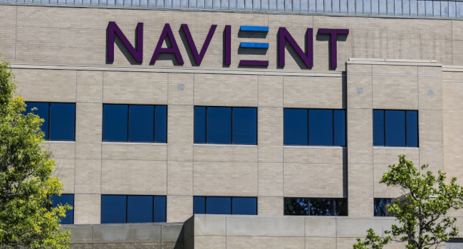
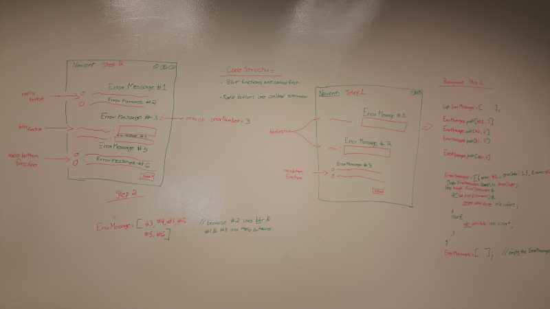
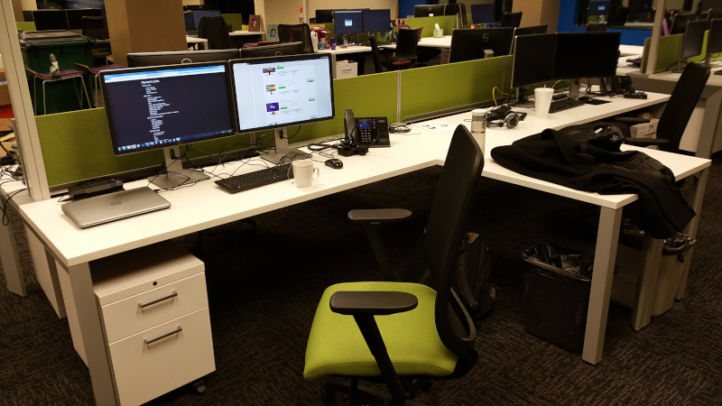

Navient
2017-06-29

Overview
Navient is a U.S. corporation based in Wilmington, Delaware, whose operations include servicing and collecting student loans.
Managing nearly $300 billion in student loans for more than 12 million debtors. The company was formed in 2014 by the split of Sallie Mae into two distinct entities, Sallie Mae Bank and Navient.
Role
I was hired through a staffing company in November of 2016 for a 12 month contract as a UI Developer to work on the Student Loan Repayment Portal. I worked in the Fishers, IN office.
In the beginning my job consisted of fixing bugs in Bootstrap layouts that were created by offshore back-end developers.
Later the creation of layouts (or views) was moved to our department.
Teamwork
I enjoyed working with the team. Even after leaving the company I'm still connected to some people through LinkedIn and Facebook.
I was one of three UI developers working on the front-end. There were five back-end C# developers in our office. There was another team of five more back-end developers working offshore in India. Plus, our project manager and our department manager.
The front-end and office back-end teams attended the same meetings and worked closely to create solutions. Not being familiar with razor syntax I would ask back-end developers for help.
In return I would help them with CSS and Node.js issues. I liked the collaborative environment.
Security
Because Navient deals directly with users personal information. They are under oversight from both Sarbanes–Oxley and the US Department of Education. This means all employees are required to complete 5C security clearance for government compliance.
It is a long frustrating and tedious process. Eventually I passed all the checks and was granted security clearance.
Due to this level of security. I had to sign an NDA which stated I was not allowed to save screenshots or any of the code I wrote. However, I am allowed to talk generally about the work I did.
Technology

The Student Loan Repayment Portal was an MVC .Net Application with backend C# code running on the server.
The front-end HTML, CSS, and JavaScript was rendered using ASP.Net and Razor syntax to handle dynamic page requests.
Our technology stack used Node.js and Gulp.js to combine and minify our HTML, CSS/SCSS, and JavaScript files.
My Work

The Student Loan Repayment Portal project consisted of about 200 web pages filled with forms and tables. All of them needed to scale to fit mobile, tablet, and desktop screen sizes.
I was tasked with doing that by bug fixing existing bootstrap layouts to make them mobile friendly.
They team I was on had scrum meetings 3 times a week. This involved sitting at my desk and using Skype to join a call. The project manager would go through everyone on the call and ask them what they did yesterday, what they were working on today, and if they had any blockers. Each person was suppose to give brief answers. Any issues that required more discussion should wait until after the meeting.
Of course, in practice these meetings devolved into status updates and in-depth code discussions between the backend C# developers.
My tickets were assigned through an internal system. I was told to check three sources of information in order to know what the layouts should look like.
There was a wireframe, a prototype, and a technical document that held the text copy for each section.
Each document was created and managed by different committees that didn't directly interact with each other. So the information was always out of date and in conflict.
My daily work involved reviewing tasks. Searching through the codebase to find the file associated with the task. Altering the HTML structure to fit the required styling. Fixing the CSS using bootstrap's built-in classes. Or, writing new styles to fix the issue. Making the page and/or component mobile friendly.
I used git to pull and push code to the Team Foundation Server used to manage the project.
All of the front-end layouts were required to support screen readers like JAWS to pass 508 compliance.
Because the project used C# as the back-end programming language. We were required to run Visual Studio 2015 for local development.
Completion
My contract ended a month before the project was completed.
At the time Navient was struggling with a few lawsuits and investigations from the Department of Education. Due to complaints of Student Loan Debt increases without prior warning.
Navient chose not to renew my contract or offer me full-time employment.